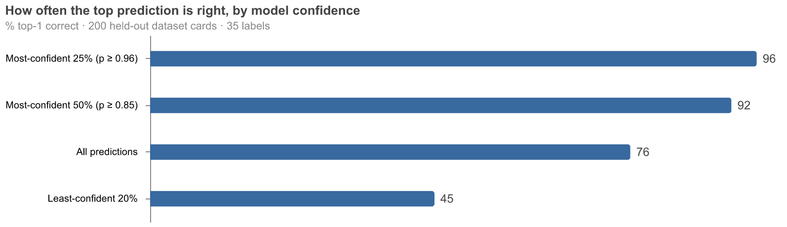

A model release became a training recipe the same day. I mostly watched.
LiquidAI shipped new encoder models this morning. By the evening there was a fine-tuning recipe, a tutorial dataset, and a working classifier — built by an agent on HF Jobs for under $5 in GPU time.
This week LiquidAI released LFM2.5-Encoders. They’re small bidirectional encoders (230M and 350M) that they report beating ModernBERT-base on GLUE/SuperGLUE, with an 8,192-token context. Since I’m still excited about smaller models that are very fast and cheap to run I wanted to see how this new encoder would do. I have had a previous idea of using the Hub’s task_categories metadata to train a classifier that could suggest task categories for datasets that don’t declare any, so I thought I’d try that.
What I actually did was paste the blog post and their cookbook repo into Claude Code and say, more or less: turn this into a recipe for my uv-scripts collection, and smoke-test it on Jobs early, before polishing anything. Then I answered questions when asked and checked in occasionally.
What came back
By the evening there was:
- A recipe:
train-classifier.py— one self-contained file that fine-tunes an encoder on any Hub dataset and pushes the trained model back to the Hub. Single-label and multi-label, auto-detected from the label column. Defaults to the new LFM2.5 encoder but takes any encoder via--model. - A tutorial dataset: dataset-cards-with-task-categories — 21k Hub dataset cards labelled with their
task_categoriesmetadata. A nicely self-referential task: predict a dataset’s task categories from its card’s prose. - A working model: dataset-card-task-classifier, trained in 20 minutes on an A100 for about $0.80.
The whole thing reproduces with one command:
hf jobs uv run --flavor a100-large --secrets HF_TOKEN \
https://huggingface.co/datasets/uv-scripts/classification/raw/main/train-classifier.py \
davanstrien/dataset-cards-with-task-categories your-username/card-task-classifier \
--label-column labels --max-length 1024 --batch-size 32The model isn’t a benchmark result — micro-F1 0.69 across 35 labels — but it has one property I care about: its confidence is honest.

That’s the shape you want for the obvious application: suggesting task_categories for the roughly two-thirds of Hub datasets that don’t declare any, auto-applying only the confident ones, and sending the rest to a human. The label set is capped to the task categories that actually work as filters on hf.co/datasets, so every suggestion is a real, filterable tag.
Everything in this post is public: the recipe (part of uv-scripts, source on GitHub), the tutorial dataset, and the trained model.
What the smoke tests caught
The agent’s smoke tests caught two real bugs I doubt I’d have found faster myself: a transformers v5 crash when a custom classification head doesn’t declare its config class, and a genuinely sneaky datasets behaviour where writing encoded labels back into a same-named column silently casts them to the original column’s schema — multi-hot floats became strings, and training fell over. It also caught the trap in the tutorial data: dataset cards contain their own task_categories in the YAML frontmatter, so training on raw cards would have been label leakage. The frontmatter gets stripped, and rows that still leak get dropped.
None of that is heroic. It’s the ordinary debugging you’d do yourself — the point is that each iteration was a ~$0.25, ten-minute GPU job away, so the agent could just run the thing instead of reasoning about whether it would work.
This worked because the infrastructure is legible to agents: every recipe in the collection is a single file that runs from a URL with the same input output argument shape; Jobs gives a disposable GPU with a cost cap and no environment to break; the Hub is the filesystem on both ends. I steered — precision over recall, which label taxonomy to target, where the recipe should live — and reviewed the results. The agent did the typing, the debugging, and the waiting.
Total GPU spend, including every failed smoke test and a full retrain after I changed my mind about the labels: under $5.
Try it with your own agent
If you want the same loop on your own data, you don’t need to write anything — hand your agent a prompt along these lines:
I want to train a text classifier using LiquidAI's LFM2.5 encoder on
Hugging Face Jobs.
- First run `hf --help` and `hf jobs --help` to learn the CLI, and check
I'm logged in with `hf auth whoami`.
- Read the base model's card with
`hf models card LiquidAI/LFM2.5-Encoder-350M` so you know its context
length and languages.
- Use this uv-scripts recipe as the starting point — read its docstring
before running anything:
https://huggingface.co/datasets/uv-scripts/classification/raw/main/train-classifier.py
- Ask me which Hub dataset I want to train on, then inspect it and
confirm the text and label columns with me (single- and multi-label
are auto-detected from the label column).
- Run a cheap smoke test first (--max-samples 1000 --epochs 1 on
a10g-small), show me the metrics from the job logs, and ask before
launching the full run.
- When the full run finishes, read the pushed model's card with
`hf models card <output-repo>` and give me the link plus a summary of
the eval metrics.The recipe’s docstring carries the rest — flavors, long-context flags, and what the pushed model card contains.